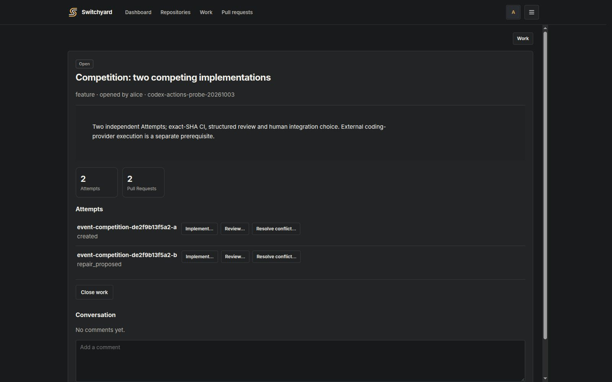
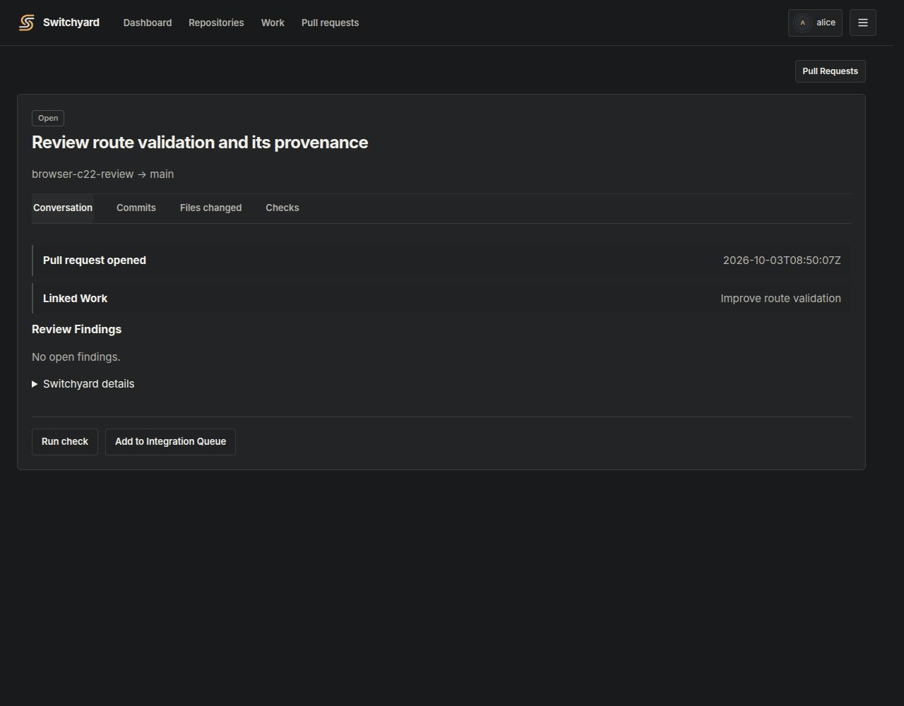
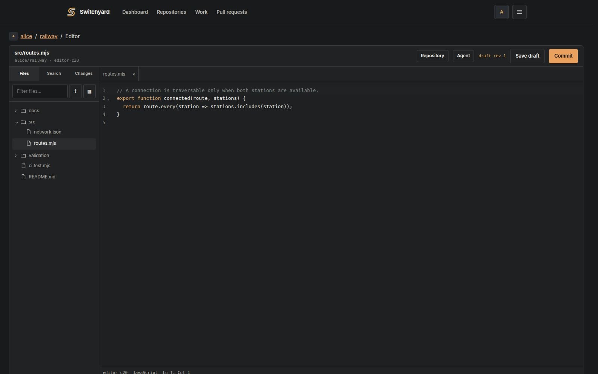
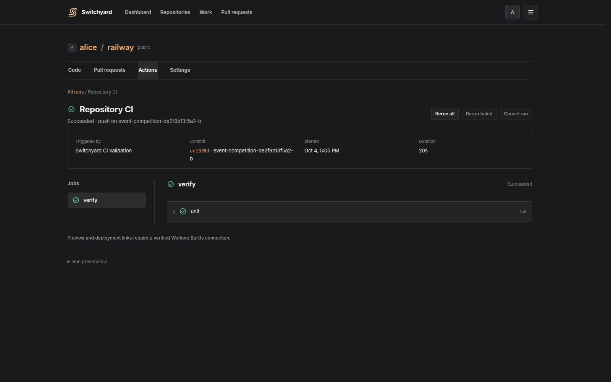
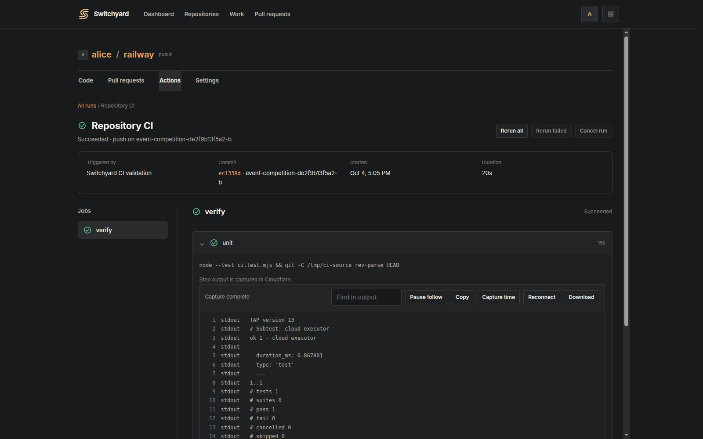
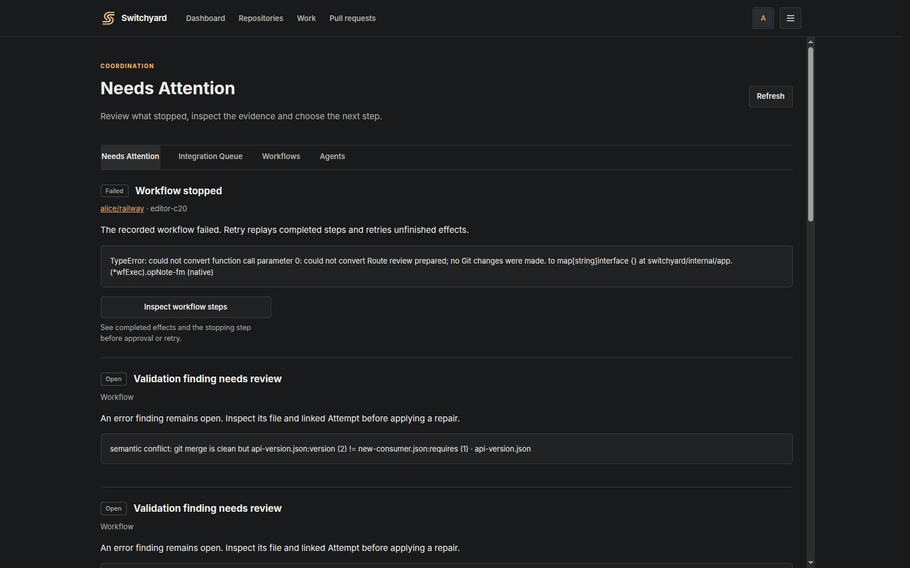
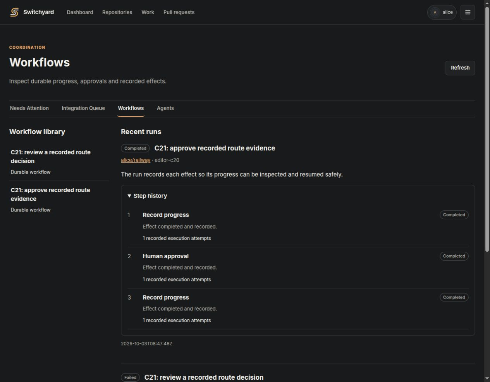
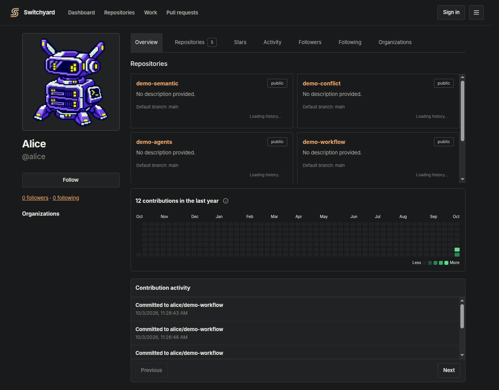
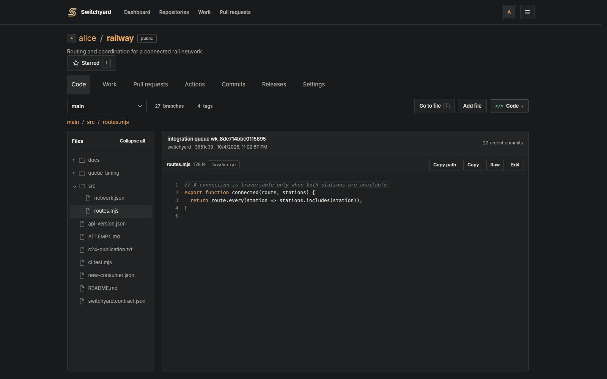
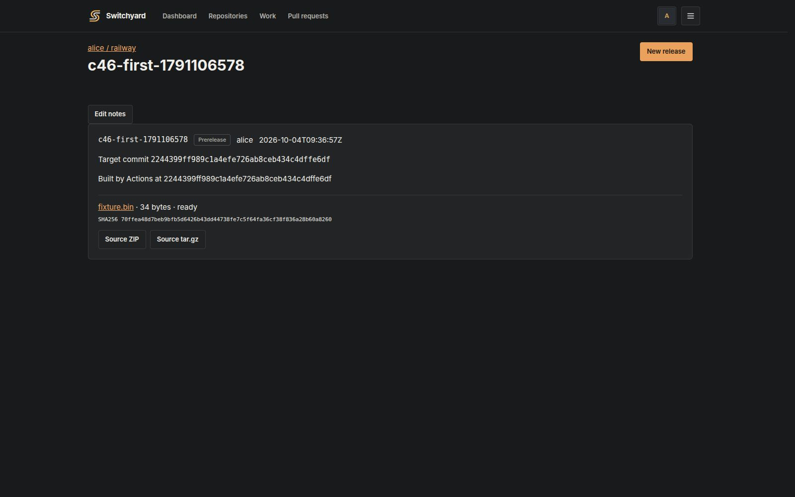

Real work. Visible progress.
Screenshots from the running Switchyard application, backed by a disposable Cloudflare Artifacts repository and durable local coordination state.











Try your own repository
Build the Go control plane, connect Trestle and Cloudflare Artifacts, and open the local application. Use ordinary Git or the browser editor. The shared demo now includes the refreshed interface and five public repositories that visitors can browse without signing in.
Run SwitchyardKnow what is demonstrated
These captures show working product interfaces and real Git/CI state. Real model-backed implementation, review and conflict-resolution runs were exercised on isolated local workers. The current Linode deployment serves the control plane and is not sized for routine Agent execution. These runs do not establish production throughput or distributed-worker scaling. CI logs are captured after steps complete. Preview/deployment requires a separately configured trusted provider.
Validation and limits →